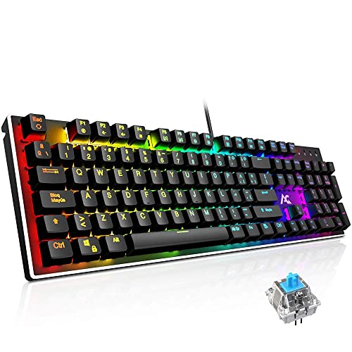
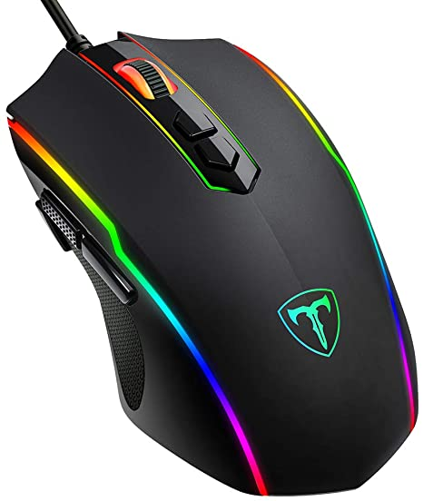

GG Games Su Tienda Favorita De VideoJuegos Al Mas Bajo Costo Del Mercado
Teclado Mecánico Gaming ACGAM AG-109R 105 Teclas y Switches Blue $120

ACGAM AG-109R
Teclado Mecánico Gaming ACGAM AG-109R
Teclado mecánico RGB con 16.8 millones de colores, construido con teclas flotantes y Switches Blue. Plug & play, sin necesidad de driver.
PICTEK - Ratón para juegos $15

PICTEK - Ratón para juegos con cable para videojuegos
PICTEK
8 botones programables y botón de fuego: compatible con la edición de macros, 8 botones de ratón se pueden programar con el software de juego PICTEK fácil de programar. El rápido botón Fire te da la ventaja durante las intensas batallas FPS Ratón para juegos FPS de gran valor, también excelente para juegos MOBA/RTS. (Disco conductor incluido)